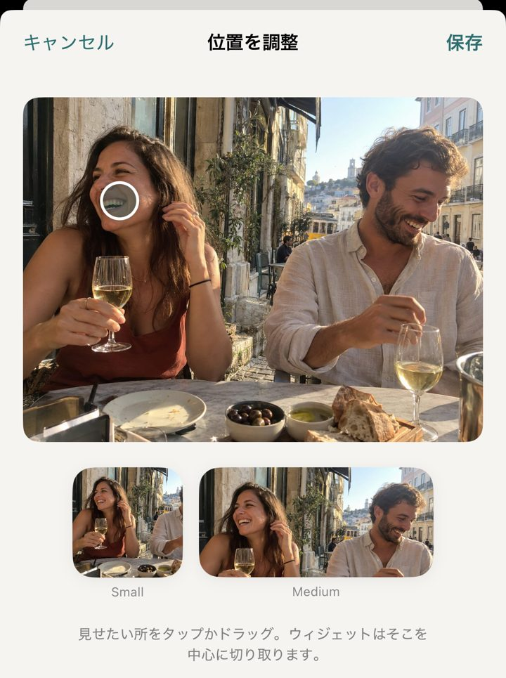
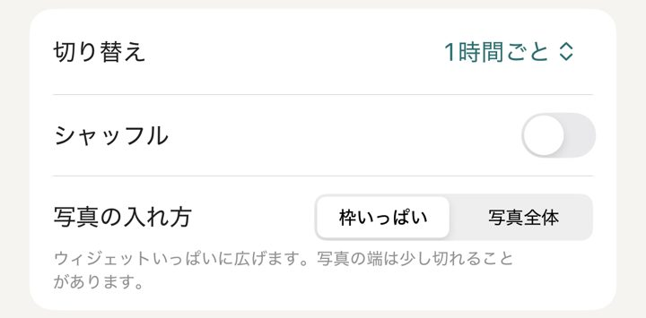

Mantel・使い方ガイド・English・Português
写真ウィジェットで顔が切れるときの直し方（iPhone）
ウィジェットの形は決まっていて、写真の形はたいていそれと合いません。合わない分はどこかを切るしかなく、人の写真だと頭の上や端にいる人が切れがちです。
Mantelでは、直し方が2つあります。どちらも無料です。
顔が切れる理由
Smallウィジェットは正方形です。iPhoneの写真の多くは縦3:4か横4:3なので、正方形に収めるには一部を切ることになります。何も設定しなければ写真の真ん中で切るため、上や端にある顔ははみ出てしまいます。
直し方1：見せたい所を選ぶ
ウィジェットいっぱいに写真を出したまま、顔を中心にしたいときに。
- Mantelを開き、その写真が入っているセットを開きます。
- 写真を長押しして「位置を調整」をタップします。
- 見せたい所をタップかドラッグします。写真の下のSmall・Mediumのプレビューが、その場で変わります。
- 「保存」をタップします。ウィジェットはそこを中心に切り取ります。

位置は写真ごとに決められます。真ん中に戻すときは「中央に戻す」をタップします。
直し方2：写真を切らずに全部見せる
集合写真や文字の入った写真など、どこも切りたくないときに。
- セットを開きます。
- 「写真の入れ方」で「写真全体」を選びます。

写真を切らずに全部見せます。まわりに少し余白が出ます。この設定はセットの写真すべてに効きます。「枠いっぱい」を選ぶと、ウィジェットいっぱいに広げる表示に戻ります。
どちらを使えばいい？
- 1人の写真や、ペットの写真：直し方1。ウィジェットはいっぱいのまま、顔は切れません。
- 何人も写っている写真や、横に広い風景：直し方2。誰も切れません。
- 両方ある：セットを分けて、片方を「枠いっぱい」、もう片方を「写真全体」にし、ウィジェットを1つずつ置きます（セットを2つ以上作るにはProが必要です）。
よくある質問
位置を調整すると、元の写真は変わりますか？変わりません。Mantelが覚えるのは「どこを見せるか」だけです。元の写真には手を加えません。
Proの機能ですか？いいえ。「位置を調整」も「写真全体」も無料です。無料ではSmallウィジェットを1つ使えます。Medium・LargeウィジェットはProです。
元に戻すには？もう一度「位置を調整」を開き、「中央に戻す」→「保存」をタップします。
App StoreでMantelを入手
サブスクなし・広告なし・アカウント不要・Mantelについて・使い方とよくある質問